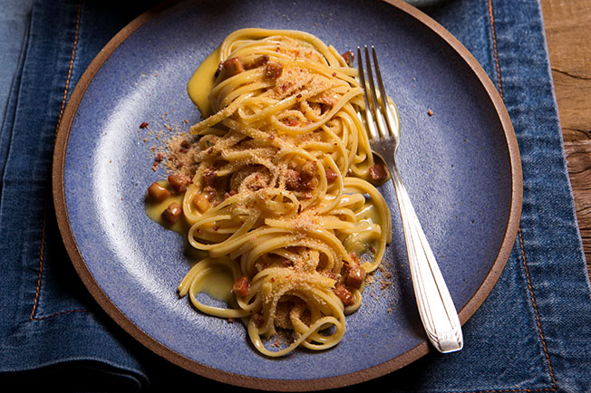

Macarrão à carbonara

Descrição
Um clássico com apenas três ingredientes: ovo, parmesão e bacon.
Você pode trocar a massa por outra longa, como espaguete. É
garantia de sucesso.
Ingredientes
- 160 g de macarrão bavette (ou outro massa longa de grano
duro)
- ½ xícara (chá) de bacon em cubos (75 g)
- ¼ de xícara (chá) de vinho branco
- 2 ovos
- 2 gemas
- ½ xícara (chá) de queijo parmesão ralado
- sal e pimenta-do-reino moída na hora
Modo de preparo
- Leve uma panela média com 2 litros de água ao fogo alto.
Quando ferver, adicione 1 colher (sopa) de sal, junte o macarrão
e misture. Deixe cozinhar pelo tempo indicado na embalagem ou
até ficar al dente.
- Enquanto o macarrão cozinha, prepare os outros ingredientes.
Numa tigela pequena quebre um ovo de cada vez e transfira para
outra tigela (lembre-se: são 2 ovos inteiros e 2 gemas, você
pode reservar as claras na geladeira ou congelador para outras
receitas). Junte o queijo parmesão e bata bem com um garfo para
misturar.
- Leve uma frigideira grande ao fogo médio. Quando aquecer,
coloque o bacon e mexa de vez em quando, por cerca de 5
minutos, até dourar. Diminua o fogo, regue o vinho branco, com
cuidado para não espirrar, misture bem e desligue o fogo.
- Assim que o macarrão estiver cozido, reserve 1 xícara (chá)
da água do cozimento.
- Agora você vai precisar fazer tudo bem rapidinho: escorra a
água, transfira o macarrão para a frigideira com o bacon quente,
junte os ovos e misture bem – a ideia é que o calor da massa
cozinhe os ovos, formando um creme. Volte a frigideira ao fogo
baixo e vá adicionando a água do cozimento reservada aos poucos,
mexendo com uma espátula por alguns minutinhos até formar um
molho espesso. Cuidado para não cozinhar os ovos. Sirva a seguir
com pimenta-do-reino a gosto e farofinha de bacon.
Página inicial